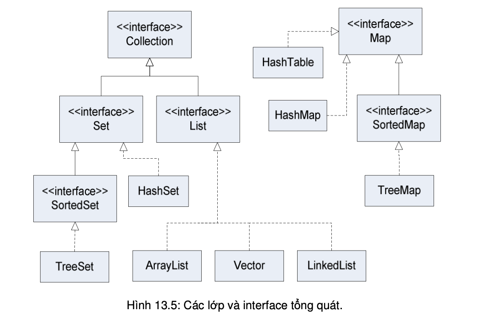

ArrayList chỉ là một trong nhiều lớp thuộc thư viện chuẩn Java được dùng cho lập trình tổng quát. Bên cạnh đó còn có những lớp thông dụng khác biểu diễn các cấu trúc dữ liệu quan trọng. Ví dụ, LinkedList là danh sách liên kết, TreeSet là cấu trúc tập hợp luôn giữ tình trạng các phần tử không trùng lặp và được sắp thứ tự, HashMap cho phép lưu trữ dữ liệu ở dạng các cặp khóa-giá trị, HashSet là cấu trúc tập hợp cho phép tra cứu nhanh, v.v... Mục này trình bày về cách sử dụng bộ các cấu trúc tổng quát này của Java.
Các cấu trúc dữ liệu tổng quát của Java có thể được chia thành hai thể loại: các lớp collection và các lớp map. Một collection là một bộ các đối tượng. Một map liên kết các đối tượng thuộc một tập hợp với các đối tượng thuộc một tập hợp khác, tương tự như một từ điển là một loạt các liên kết giữa các định nghĩa và các từ, hay danh bạ điện thoại liên kết các số điện thoại với các cái tên. Có thể coi một map như là một danh sách liên kết (association list). Các lớp collection và các lớp map được đại diện bởi hai interface có tham số kiểu: Collection<T> và Map<T,S>. Trong đó, T và S có thể đại diện cho bất cứ kiểu dữ liệu nào ngoại trừ các kiểu cơ bản.
Có hai loại collection: List và Set. List (danh sách) là loại collection mà trong đó các đối tượng được xếp thành một chuỗi tuyến tính. Một danh sách có phần tử thứ nhất, thứ hai, v.v.. Với mỗi phần tử trong danh sách, trừ phần tử cuối cùng, đều có một phần tử đứng sau nó. Set (tập hợp) là loại collection mà trong đó không có đối tượng nào xuất hiện nhiều hơn một lần. Các lớp loại List và Set được đại diện bởi hai interface List<T> và Set<T>, chúng là các interface con của interface Collection<T>.
Hình 13.5 mô tả quan hệ giữa các lớp và interface của Collection API. Hình này không liệt kê đầy đủ các lớp trong Collection API mà chỉ liệt kê một số lớp/interface quan trọng. Lưu ý rằng Map (ánh xạ) không thừa kế từ Collection, nhưng Map vẫn được coi là một phần của Collection API. Do đó, ta vẫn coi mỗi đối tượng kiểu Map là một collection.
Mỗi đối tượng collection, danh sách hay tập hợp, phải thuộc về một lớp cụ thể cài đặt interface tương ứng. Chẳng hạn, lớp ArrayList<T> cài đặt interface List<T>, và do đó cài đặt cả Collection<T>.
Interface Collection<T> đặc tả các phương thức thực hiện một số chức năng cơ bản đối với collection bất kì. Do collection là một khái niệm rất chung chung, các chức năng đó cũng tổng quát để có thể áp dụng cho nhiều kiểu collection chứa các loại đối tượng khác nhau. Một số chức năng chính: